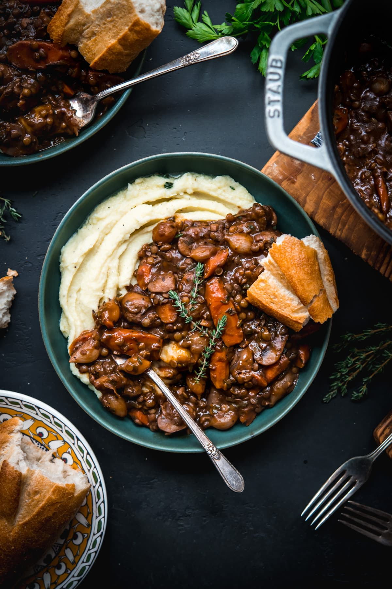

Coq Au Vin

Description
Coq au Vin, translated as Chicken of the Wine, is a traditional French family dish. This hearty stew is sure please the whole family with its deep, rich flavors.
Ingredients
- 4 Chicken Thighs
- 4 Chicken Drumsticks
- 1-1/2 cups Red Wine
- 1 cup Chicken Stock
- Optional: 1/4 cup Brandy
- 3 strips of Lardons (cut into 1/2 inch pieces)
- 1 tsp each: salt and pepper, divided
- 1 medium onion
- 4 medium carrots (cut into 1 inch pieces)
- 4 cloves garlic (minced)
- 2 Tbsp tomato paste
- 2 tsp fresh thyme leaves
- 8 ounces mushrooms (thickly sliced)
- 8 Ounces pearl onions
- Beurre Manie (2Tbsp flour + 2Tbsp soft butter)
Steps
- Place the chicken thighs and drumsticks in a medium-sized bowl and pour the wine, chicken stock, and (if using) the brandy over the top. Prep the vegetables.
- Add the bacon to a large, high-sided pan or braiser over medium-high heat. Cook until the bacon is crispy, about 8 minutes, then remove it from the pan with a slotted spoon.
- Remove the chicken from the wine marinade (save the wine) and dry the chicken well with paper towels. Season the chicken with ½ teaspoon of salt and pepper.
- Working in 2 batches if needed, place the chicken in the pan, skin side down. Sear until golden on both sides (about 8-10 minutes total), then remove the chicken. Remove all but two tablespoons of the bacon/chicken oil from the pan – reserving the oil to use later in the recipe.
- Add the sliced onion and carrots to the pan and let them cook until the onion is golden brown, about 7-8 minutes. Add the garlic to the pan and let it cook for 1 minute.
- Push the vegetables to the side of the pan and add the tomato paste. Cook the tomato paste until it is fragrant and begins to darken. Pour in the reserved wine marinade, add the remaining ½ teaspoon of salt and pepper, and bring it to a boil for 5 minutes, scraping the bottom to remove any stuck-on bits.
- Nestle the chicken into the pan and sprinkle the thyme over top. Cover the pan, turn the heat to low, and simmer for 20 minutes.
- Pour 1 tablespoon of the reserved oil (or use olive oil) into a large skillet. Add the mushrooms and saute over medium-high heat until brown, about 10 minutes.
- Add the pearl onions to the pan with the chicken and cook for 10 minutes.
- In a small bowl, mix your choice of beurre manie – see notes for the options. Remove the chicken from the pan, add the beurre manie, and stir until the sauce thickens. (You can leave the chicken in the pan if you prefer, but I find it is easier if I remove it.) Season to taste with salt and pepper – I often add an extra teaspoon of each.
- Add the chicken back into the pan and top with the cooked bacon and mushrooms. Sprinkle with a little fresh thyme.
Home